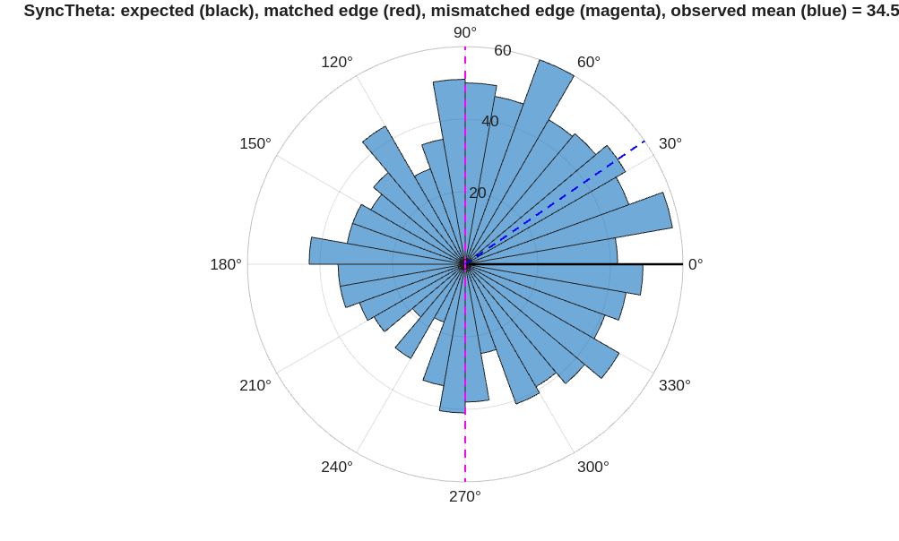
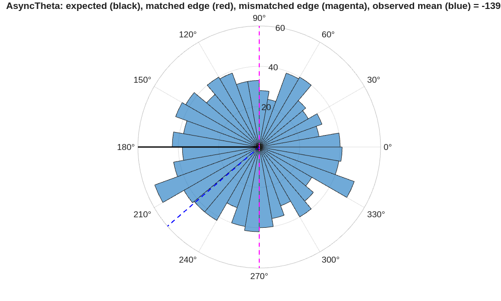
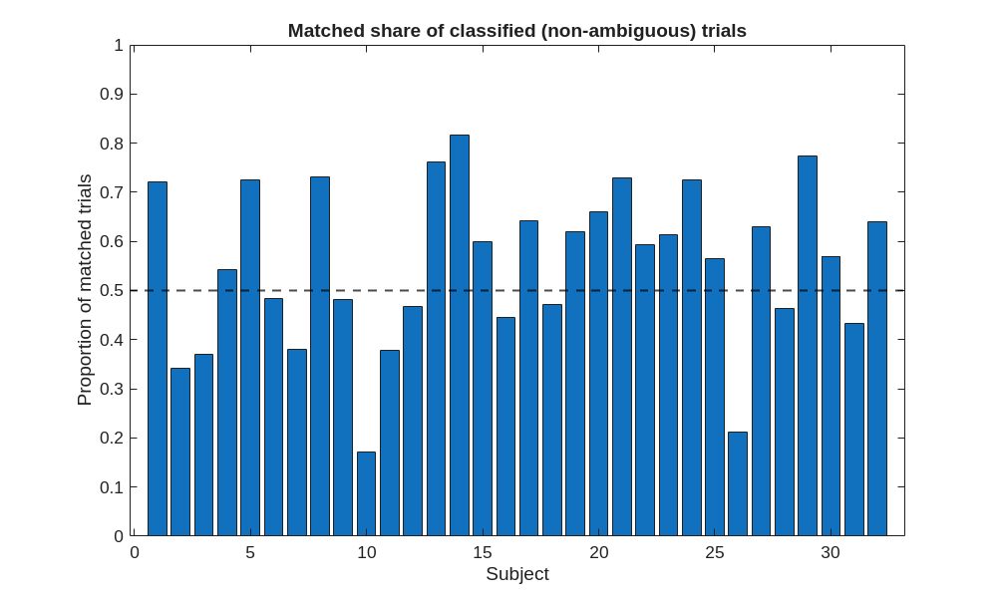
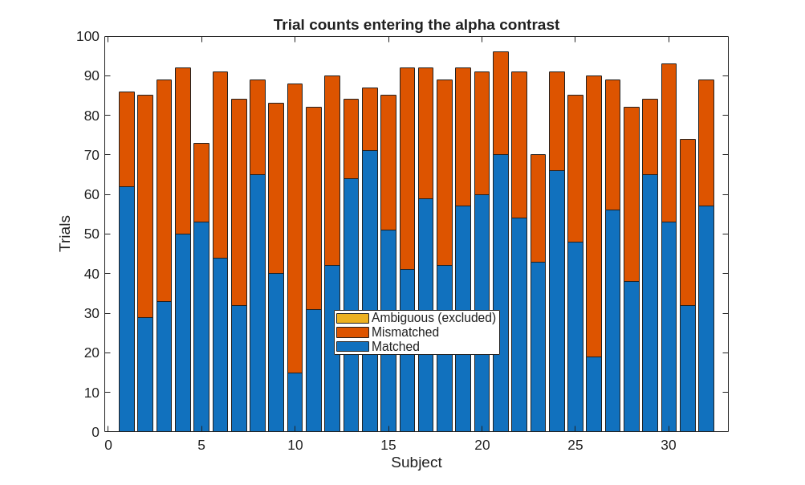
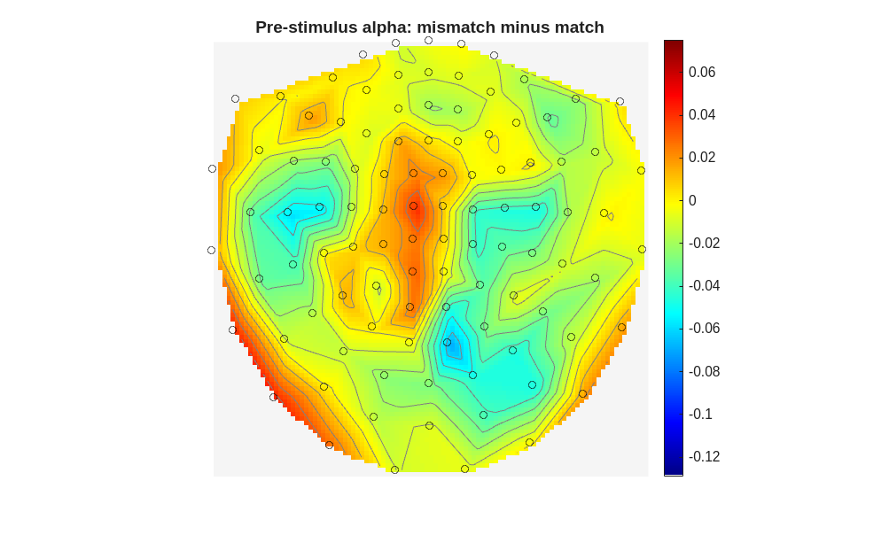
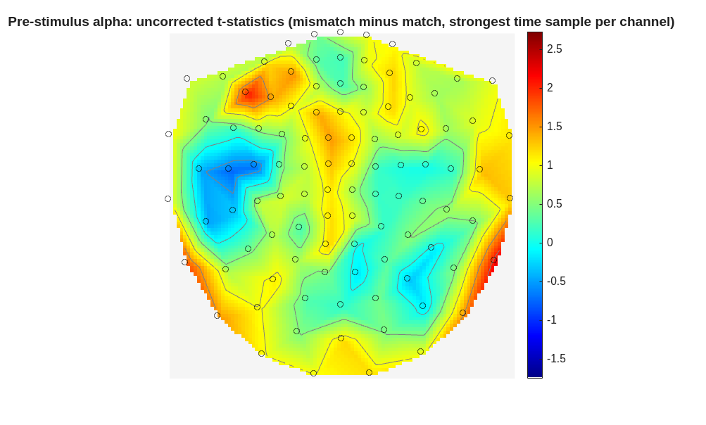

AlphaAnalysis.m
Pre-stimulus alpha analysis, following Wang et al. (2026, Communications Psychology). Tests whether pre-stimulus alpha power differs before trials whose actual visual-auditory phase difference matched their nominal condition vs trials where it didn't, and whether alpha relates to subsequent memory.
Scope: implements the memory half of that analysis only. The tonic-alpha (trial-order x match) control ANOVA and LCMV source localisation are not implemented here.
Run once per channel type (ChanType = 'MEGPLANAR', then 'MEGMAG'); outputs are saved with the channel type in the filename so runs don't overwrite.
Not circular: sensors are selected by a cluster test on the mismatch-minus-match alpha contrast, and memory performance plays no part in that selection. (Re-testing match/mismatch itself on those sensors would be circular, and is deliberately not done here.)
Requires Preprocessing.m and Analysis.m first. Reads Synchronicity.mat from Analysis.m (per-trial phase lag, condition, entrainment strength). Bad channels come from each subject's merged file, not a saved list, so this works for any ChanType regardless of what Analysis.m used.
Behavioural data (per-trial memory outcome) is an external dependency not produced by this pipeline -- see "Behavioural data" below.
Contents
- Setup
- Load outputs from Analysis.m
- Channel set, neighbours, and interpolation weights
- Matched / mismatched trial labels
- Pre-stimulus alpha power, per channel, per trial
- Per-subject sensor averages for the cluster test
- Cluster-based permutation test
- Sensor selection for the trial-level analyses
- Per-trial alpha over the selected sensors
- Behavioural data
- Export trial-level table
- Diagnostic plots
- Memory analysis
- Results inspection plots
- Continuous trial-level analyses
Setup
This duplicates TIMESetup.m rather than calling it, because the alpha analysis uses a different set of parameters and can be run on its own. If the paths or the subject list change, both files need updating. Kept in sync with the Setup sections of Preprocessing.m and Analysis.m -- if you change one, change the others to match.
close all hidden clear all % Random seed. The cluster permutation test's randomisations draw on % MATLAB's global random number generator; fixing the seed makes them % exactly reproducible across runs. `clear` does not reset the generator, % so this must be set explicitly rather than relied upon to start fresh. rngSeed = 42; rng(rngSeed, 'twister'); % Small helper used when reporting scalp positions ternary_str = @(cond, a, b) subsref({b, a}, struct('type', '{}', 'subs', {{cond + 1}})); % Paths addpath '/imaging/henson/TIME/LatestMEGscripts' addpath /imaging/local/software/spm_toolbox/osl/osl-core addpath('/imaging/henson/TIME/MEG_scripts') osl_startup('/imaging/local/software/spm_toolbox/osl', 'shared') % Initialise SPM's M/EEG defaults without opening its GUI. `spm eeg` % launches the Menu, Interactive and Graphics windows, and publish() % captures every open figure, so those windows end up embedded in the HTML % output. spm('defaults', ...) configures exactly the same defaults with no % windows, and is safe to call repeatedly. spm('defaults', 'EEG'); % Close any SPM windows that initialisation opened regardless, for the same % reason. SPM tags its windows, so they can be removed without touching the % figures this script creates itself. delete(findall(0, 'Type', 'figure', 'Tag', 'Menu')); delete(findall(0, 'Type', 'figure', 'Tag', 'Interactive')); delete(findall(0, 'Type', 'figure', 'Tag', 'Graphics')); outdir = '/imaging/henson/TIME/meg-derivatives/'; resultdir = '/imaging/henson/TIME/LatestMEGscripts/MEGxBehavioural'; % Figures: saved as .png (raster, 300 dpi). Vector formats (EMF, SVG, PDF) % were all tried in turn -- EMF is Windows-only and errors on this % platform; SVG and PDF both failed to render polarhistogram figures % correctly regardless of transparency settings, a MATLAB vector-export % limitation for that specific graphics object rather than something % fixable from this script. PNG is what has actually been confirmed to % render every figure correctly, so it is used for all of them rather % than keeping different paths for different figure types. figdir = '/imaging/henson/TIME/LatestMEGscripts/figures'; if ~exist(figdir, 'dir'), mkdir(figdir); end save_fig = @(fig, name) save_fig_png_safe(fig, fullfile(figdir, [name '.png'])); ChanType = 'MEGPLANAR'; % run once with this, then again with 'MEGMAG'. Wang et al. % tested gradiometers and magnetometers separately; outputs % below are saved with the channel type in the filename so % the two runs do not overwrite each other. Subs = 1:32; transdef = ''; PhaseConds = {'SyncTheta', 'AsyncTheta'}; ExpectedPhase = [0, pi]; % Alpha analysis windows and band AlphaBand = [8 12]; % Hz PreWin = [-0.7 -0.2]; % pre-stimulus window, relative to stimulus onset (s) AlphaBaseWin = [3.2 3.7]; % post-stimulus baseline window (s). Deliberately % post-stimulus: normalising a pre-stimulus measure % by a pre-stimulus baseline would be circular. Sits % after the 3 s stimulus offset to avoid the offset % response. % Matched / mismatched classification. A trial is matched if its actual % phase difference falls within MatchedBound of the intended offset, and % mismatched if it is at least MismatchedBound away. With both bounds at % pi/2 the two groups partition every trial with no ambiguous band, a % +/- 90 deg split matching Wang et al. exactly (their code sorts trials % into two bins by phase difference: match = intended bin, mismatch = % everything else). Trials on the boundary go to matched (see the <= / > % in the classification below), keeping the groups mutually exclusive. % % A sharpened version was tried (MatchedBound = pi/4, MismatchedBound = % 3*pi/4), to discard the least certain labels -- phase here comes from a % single maximum-weight sensor per modality, not a beamformed ROI, so the % labels are noisier than Wang et al.'s. It backfired: 47.6% of trials fell % in the ambiguous band and five subjects were left with 3-4 trials in one % group, whose per-subject means were near noise yet carried full weight in % the group test. At these trial counts the trade is not worth making. Set % MatchedBound = pi/4 and MismatchedBound = 3*pi/4 to reinstate it. MatchedBound = pi/2; % within 90 deg of the intended offset MismatchedBound = pi/2; % everything else counts as mismatched % Cluster permutation settings nPermutations = 1000; clusterAlpha = 0.05; neighbourDist = 40; % millimetres. Sensor positions are converted to mm % below, so this must be in mm too. Adjacent MEGIN % planar gradiometer locations are about 34 mm apart, % so a value near 40 gives roughly 4 to 8 neighbours % per channel. Too small a value silently prevents any % cluster from forming. minNeighbourChans = 0; % minimum neighbours a channel needs to join a cluster. % MNE, used by Wang et al., has no equivalent parameter, % so 0 matches their procedure; higher values are stricter. statTail = 1; % 1 = right-tailed, testing Wang et al.'s direction (alpha % higher before mismatched trials); -1 = left-tailed; % 0 = two-tailed. A one-tailed test finds nothing if the % effect runs the other way, so check the diagnostics % printed after the test before interpreting a null. % Subjects excluded from this analysis ExcludeSubs = []; % sub-23 was excluded here while its MEG and % behavioural trials were misaligned. That arose % because its first run holds 16 trials rather % than 64, displacing everything after it by 48 % rows. Analysis.m now derives the mapping from % the condition labels instead of assuming the % identity, so the subject is recoverable. % Memory analysis settings
Warning: Found OSLDIR environment variable; shutting down before starting up again... [OSL] Cleaned up the path. Bye now! [OSL] Starting up from folder: /imaging/local/software/spm_toolbox/osl [OSL] Using configuration file: /home/fs02/Documents/MATLAB/osl.conf [OSL] Backing-up matlab path to: /home/fs02/Documents/MATLAB/.path-backup.tmp
Load outputs from Analysis.m
cd(resultdir) load('Synchronicity.mat', 'Sync_pSub') load('TrialMap.mat', 'TrialMap') % MEG trial index to behavioural row if numel(TrialMap) ~= 32 || any(cellfun(@isempty, TrialMap)) error(['TrialMap covers %d subjects and %d entries are empty. Re-run ' ... 'Analysis.m to rebuild it.'], numel(TrialMap), sum(cellfun(@isempty, TrialMap))); end if ~ismember('Condition', Sync_pSub.Properties.VariableNames) error(['Sync_pSub has no Condition column. Re-run the phase-lag section of ' ... 'Analysis.m, which now adds Condition and EntrainStrength.']); end % Drop excluded subjects. SubFileIdx records each retained subject's % original position, which the behavioural section needs to pick the right % file. SubFileIdx = find(~ismember(Subs, ExcludeSubs)); Subs = Subs(~ismember(Subs, ExcludeSubs)); Sync_pSub = Sync_pSub(~ismember(Sync_pSub.ParticipantID, ExcludeSubs), :); if ~isempty(ExcludeSubs) fprintf('Excluded subjects: %s. Analysing %d subjects.\n', ... mat2str(ExcludeSubs), length(Subs)); end
Channel set, neighbours, and interpolation weights
Cluster-based permutation testing across subjects requires an identical channel set for everyone, but each subject has a different set of channels flagged bad by OSL. Rather than restricting the analysis to channels good in every subject -- which discards sensors wholesale because of a handful of participants -- each subject's bad channels are interpolated from their good neighbours, so every subject contributes the full gradiometer array.
Interpolation uses a distance-weighted average over the neighbours defined below, equivalent to ft_channelrepair's 'weighted' method. It is applied to the time series, before any filtering, because interpolation is a linear spatial operation and interpolating power or amplitude instead would not be equivalent.
Note the data are already tSSS-MaxFiltered, which reconstructs channels flagged at that stage from the SSS basis and reduces the spatial rank to roughly 70. The channels interpolated here are the additional ones OSL flagged afterwards. Interpolated channels are therefore not independent of their neighbours -- but neither are any of the channels after SSS, and the cluster test's spatial correction already assumes strong spatial correlation.
Dref = spm_eeg_load(fullfile(outdir, 'sub-30/meg/esub-30_task-loc_meg_proc-sss.mat')); AnalysisChans = Dref.chanlabels(indchantype(Dref, ChanType)); AnalysisChans = AnalysisChans(:)'; nChan = numel(AnalysisChans); % Sensor neighbours. SPM returns sensor positions in whatever units the % file carries, which for MEGIN data is millimetres, so the distance % threshold has to be in the same units. Converting explicitly removes the % ambiguity: a mismatch here does not raise an error, it just yields almost % no neighbours (each planar gradiometer finding only the partner mounted % at the same location), and with too few neighbours no cluster can form % however strong the underlying effect. grad = ft_convert_units(Dref.sensors('MEG'), 'mm'); cfg = []; cfg.method = 'distance'; cfg.neighbourdist = neighbourDist; cfg.grad = grad; cfg.channel = AnalysisChans; neighbours = ft_prepare_neighbours(cfg); meanNeighbours = mean(cellfun(@numel, {neighbours.neighblabel})); fprintf('Analysed channels: %d. Average neighbours per channel: %.1f\n', ... nChan, meanNeighbours); if meanNeighbours < 3 warning(['Only %.1f neighbours per channel, which is too few for clustering ' ... '(a healthy MEGIN planar layout gives roughly 4 to 8). Check ' ... 'neighbourDist against the units of grad, and inspect the result ' ... 'with ft_neighbourplot(struct(''neighbours'', neighbours), grad).'], ... meanNeighbours); end % Channel positions, ordered to match AnalysisChans [inGrad, gradIdx] = ismember(AnalysisChans, grad.label); if ~all(inGrad) error('%d analysed channels are absent from the sensor description.', sum(~inGrad)); end chanPos = grad.chanpos(gradIdx, :); % One interpolation matrix per subject: identity for good channels, and a % distance-weighted average of good neighbours for bad ones. Bad channels % are read from each subject's own merged file, so this section is % independent of which ChanType Analysis.m was run with. InterpW = cell(1, length(Subs)); GoodChans_pSub = cell(1, length(Subs)); nBadTotal = 0; for iSub = 1:length(Subs) Dsub = spm_eeg_load(fullfile(outdir, sprintf('sub-%02d', Subs(iSub)), 'meg', ... sprintf('cesub-%02d_task-TIME_run-1_meg_proc-sss%s.mat', Subs(iSub), transdef))); GoodChans_pSub{iSub} = Dsub.chanlabels(indchantype(Dsub, ChanType, 'GOOD')); isGood = ismember(AnalysisChans, GoodChans_pSub{iSub}); badIdx = find(~isGood); W = eye(nChan); for b = badIdx(:)' nbEntry = neighbours(strcmp({neighbours.label}, AnalysisChans{b})); if isempty(nbEntry) warning('Channel %s has no entry in the neighbour structure; left uninterpolated.', ... AnalysisChans{b}); continue end [inSet, nbIdx] = ismember(nbEntry.neighblabel, AnalysisChans); nbIdx = nbIdx(inSet); nbIdx = nbIdx(isGood(nbIdx)); % interpolate from good neighbours only if isempty(nbIdx) warning(['Subject %d: channel %s has no good neighbours and was left ' ... 'uninterpolated. Its values remain those of a channel flagged ' ... 'bad.'], Subs(iSub), AnalysisChans{b}); continue end dist = sqrt(sum((chanPos(nbIdx, :) - chanPos(b, :)).^2, 2)); w = 1 ./ max(dist, eps); w = w / sum(w); W(b, :) = 0; W(b, nbIdx) = w; end InterpW{iSub} = W; nBadTotal = nBadTotal + numel(badIdx); end fprintf('Interpolated %d bad channels across %d subjects (mean %.1f per subject).\n', ... nBadTotal, length(Subs), nBadTotal / length(Subs));
using gradiometers specified in the configuration Warning: Neuromag306 system detected - be aware of different sensor types, see http://www.fieldtriptoolbox.org/faq/why_are_there_multiple_neighbour_templates_for_the_neuromag306_system there are on average 8.9 neighbours per channel Analysed channels: 204. Average neighbours per channel: 8.9 Interpolated 99 bad channels across 32 subjects (mean 3.1 per subject).
Matched / mismatched trial labels
A trial is "matched" if its actual visual-auditory phase difference fell within MatchedBound of the phase offset its condition intended (0 deg for SyncTheta, 180 deg for AsyncTheta), and "mismatched" if it fell at least MismatchedBound away. Trials between the two bounds are ambiguous and excluded from the contrast, since with a single-sensor phase estimate their classification is the least reliable. Only the two theta conditions are analysed: NoFlicker and SyncDelta have no defined 4 Hz phase relationship, so the distinction does not apply to them.
Note this centres the bins on exactly 0 and 180 deg, as in Wang et al. Check meanLagDeg from Analysis.m first: if there is a systematic offset (from conduction delays or the audio-visual lag), centring the bins on the observed mean instead may be more appropriate, and should be a deliberate choice rather than a default.
expectedByTrial = nan(height(Sync_pSub), 1); for iCond = 1:length(PhaseConds) expectedByTrial(strcmp(Sync_pSub.Condition, PhaseConds{iCond})) = ExpectedPhase(iCond); end % Wrapped angular distance between the observed and expected phase offset angDist = abs(angle(exp(1i * (Sync_pSub.Synchronicity - expectedByTrial)))); % The second condition on Mismatched keeps the two groups mutually exclusive % when the bounds coincide, as they do by default; without it a trial sitting % exactly on the boundary would be counted in both. Sync_pSub.Matched = angDist <= MatchedBound; Sync_pSub.Mismatched = angDist >= MismatchedBound & ~Sync_pSub.Matched; Sync_pSub.Ambiguous = ~Sync_pSub.Matched & ~Sync_pSub.Mismatched; fprintf('Matched: %d (%.1f%%) Mismatched: %d (%.1f%%) Ambiguous, excluded: %d (%.1f%%) of %d\n', ... sum(Sync_pSub.Matched), 100 * mean(Sync_pSub.Matched), ... sum(Sync_pSub.Mismatched), 100 * mean(Sync_pSub.Mismatched), ... sum(Sync_pSub.Ambiguous), 100 * mean(Sync_pSub.Ambiguous), height(Sync_pSub)); % Warn if sharpening has left too few trials in any subject to estimate a % stable per-subject mean for either group. minTrialsPerGroup = 10; for iSub = 1:length(Subs) subRows = Sync_pSub.ParticipantID == Subs(iSub); nM = sum(Sync_pSub.Matched(subRows)); nMM = sum(Sync_pSub.Mismatched(subRows)); if min(nM, nMM) < minTrialsPerGroup warning('Subject %d: only %d matched and %d mismatched trials after sharpening.', ... Subs(iSub), nM, nMM); end end
Matched: 1542 (55.5%) Mismatched: 1236 (44.5%) Ambiguous, excluded: 0 (0.0%) of 2778
Pre-stimulus alpha power, per channel, per trial
Alpha is not covered by the frequency vector used in Analysis.m (which stops at 8 Hz), so it is computed here. A bandpass filter plus Hilbert transform is used, matching the approach taken in the phase-lag section of Analysis.m. Power is retained per channel (rather than channel-averaged as in TF_pSub) because the cluster test operates over sensors.
Only two summary values per channel per trial are stored -- the mean amplitude in the pre-stimulus window and in the baseline window -- so the full time courses never need to be held in memory.
AlphaPre_pSub = cell(1, length(Subs)); % channel x trial, pre-stimulus window AlphaBase_pSub = cell(1, length(Subs)); % channel x trial, baseline window TrialInds_pSub = cell(1, length(Subs)); % trial indices these columns correspond to AlphaDiffTC_pSub = cell(1, length(Subs)); % channel x time, mismatch-minus-match, pre-stimulus window only preTimes = []; % actual time (s) of each preIdx sample, set inside the loop for iSub = 1:length(Subs) fprintf('Alpha power: subject %d of %d\n', iSub, length(Subs)); sub_nam = sprintf('sub-%02d', Subs(iSub)); sub_in = fullfile(outdir, sub_nam, 'meg'); cd(sub_in) D = spm_eeg_load(sprintf('cesub-%02d_task-TIME_run-1_meg_proc-sss%s.mat', Subs(iSub), transdef)); % Index the common channels in this subject's own channel ordering [~, chanInds] = ismember(AnalysisChans, D.chanlabels); if any(chanInds == 0) error('Subject %s is missing one or more common channels.', sub_nam); end % Only the trials that appear in Sync_pSub for this subject, so that % alpha and the phase-lag measures index the same trials TrialInds = Sync_pSub.TrialNum(Sync_pSub.ParticipantID == Subs(iSub)); TrialInds_pSub{iSub} = TrialInds; % Matched/Mismatched status for these same trials, in the same order, % reused from Sync_pSub exactly as the per-subject sensor averages % section below does, so the two stay consistent. subRows = Sync_pSub.ParticipantID == Subs(iSub); matched = Sync_pSub.Matched(subRows); mismatched = Sync_pSub.Mismatched(subRows); preIdx = (indsample(D, PreWin(1)) + 1):indsample(D, PreWin(2)); baseIdx = (indsample(D, AlphaBaseWin(1)) + 1):indsample(D, AlphaBaseWin(2)); preTimes = time(D); preTimes = preTimes(preIdx); AlphaPre = nan(length(chanInds), length(TrialInds)); AlphaBase = nan(length(chanInds), length(TrialInds)); % Raw alpha-amplitude time course in the pre-stimulus window, per trial. % Kept only for the current subject and reduced to the mismatch-minus-match % difference below before moving on, so the full per-trial array is never % held for more than one subject. The baseline correction is applied after % the loop, once the per-condition baselines are known, rather than % per-trial (see below). preAmp = nan(length(chanInds), numel(preIdx), length(TrialInds)); for iTrial = 1:length(TrialInds) dat = squeeze(D(chanInds, :, TrialInds(iTrial))); % channel x time dat = InterpW{iSub} * dat; % interpolate this subject's bad channels fdat = ft_preproc_bandpassfilter(dat, D.fsample, AlphaBand, 4, 'but', 'twopass', 'reduce', 'hann'); amp = abs(hilbert(fdat'))'; % hilbert works down columns, so transpose in and out AlphaPre(:, iTrial) = mean(amp(:, preIdx), 2); AlphaBase(:, iTrial) = mean(amp(:, baseIdx), 2); preAmp(:, :, iTrial) = amp(:, preIdx); end AlphaPre_pSub{iSub} = AlphaPre; AlphaBase_pSub{iSub} = AlphaBase; % Mismatch-minus-match difference time course for the spatio-temporal % cluster test, normalised by the per-condition mean baseline power (Wang % et al.): a single baseline per condition, not one per trial. This is the % same normalisation as the scalar AlphaDiff below -- applied at every % sample instead of to the window mean -- so the two agree once % time-averaged. baseMatched = mean(AlphaBase(:, matched), 2); baseMismatched = mean(AlphaBase(:, mismatched), 2); tcMatched = mean((preAmp(:, :, matched) - baseMatched) ./ baseMatched, 3); tcMismatched = mean((preAmp(:, :, mismatched) - baseMismatched) ./ baseMismatched, 3); AlphaDiffTC_pSub{iSub} = tcMismatched - tcMatched; clear preAmp end cd(resultdir) save(sprintf('AlphaPower_pSub_%s.mat', ChanType), 'AlphaPre_pSub', 'AlphaBase_pSub', 'TrialInds_pSub', 'AnalysisChans')
Alpha power: subject 1 of 32 Alpha power: subject 2 of 32 Alpha power: subject 3 of 32 Alpha power: subject 4 of 32 Alpha power: subject 5 of 32 Alpha power: subject 6 of 32 Alpha power: subject 7 of 32 Alpha power: subject 8 of 32 Alpha power: subject 9 of 32 Alpha power: subject 10 of 32 Alpha power: subject 11 of 32 Alpha power: subject 12 of 32 Alpha power: subject 13 of 32 Alpha power: subject 14 of 32 Alpha power: subject 15 of 32 Alpha power: subject 16 of 32 Alpha power: subject 17 of 32 Alpha power: subject 18 of 32 Alpha power: subject 19 of 32 Alpha power: subject 20 of 32 Alpha power: subject 21 of 32 Alpha power: subject 22 of 32 Alpha power: subject 23 of 32 Alpha power: subject 24 of 32 Alpha power: subject 25 of 32 Alpha power: subject 26 of 32 Alpha power: subject 27 of 32 Alpha power: subject 28 of 32 Alpha power: subject 29 of 32 Alpha power: subject 30 of 32 Alpha power: subject 31 of 32 Alpha power: subject 32 of 32
Per-subject sensor averages for the cluster test
Baseline correction follows Wang et al.: pre-stimulus alpha is expressed relative to the mean baseline-window power across trials, computed separately within the matched and mismatched trials of each subject. The contrast taken forward is mismatch minus match, so that a positive value means alpha was higher before mismatched trials (equivalently, lower before matched ones).
AlphaDiff = nan(length(Subs), numel(AnalysisChans)); % subject x channel for iSub = 1:length(Subs) subRows = Sync_pSub.ParticipantID == Subs(iSub); matched = Sync_pSub.Matched(subRows); mismatched = Sync_pSub.Mismatched(subRows); AlphaPre = AlphaPre_pSub{iSub}; AlphaBase = AlphaBase_pSub{iSub}; baseMatched = mean(AlphaBase(:, matched), 2); baseMismatched = mean(AlphaBase(:, mismatched), 2); normMatched = mean((AlphaPre(:, matched) - baseMatched) ./ baseMatched, 2); normMismatched = mean((AlphaPre(:, mismatched) - baseMismatched) ./ baseMismatched, 2); AlphaDiff(iSub, :) = (normMismatched - normMatched)'; end
Cluster-based permutation test
One-sample test across subjects of whether the mismatch-minus-match alpha difference exceeds zero, right-tailed, corrected by cluster-based permutation over channels AND time jointly (multiple samples within the -0.7 to -0.2 s window, not a single pre-averaged value per channel). This matches Wang et al.'s actual method (their multimodal_sensor_alpha_SME.py uses mne.stats.spatio_temporal_cluster_ 1samp_test with sensor adjacency combined with the time dimension via mne.stats.combine_adjacency), which their paper does not describe in this level of detail. FieldTrip does not need a separate option to enable the temporal half of this: once cfg.neighbours is set and the data carry more than one time sample, ft_timelockstatistics clusters over adjacent time points automatically, the same as adjacent channels. This defines the sensor set used by the memory analysis below.
% Neighbours and the analysed channel set were built in the channel-set % section above, and are reused here. dataDiff = cell(1, length(Subs)); dataZero = cell(1, length(Subs)); for iSub = 1:length(Subs) tl = []; tl.label = AnalysisChans(:); tl.time = preTimes; tl.dimord = 'chan_time'; tl.avg = AlphaDiffTC_pSub{iSub}; dataDiff{iSub} = tl; tl.avg = zeros(size(AlphaDiffTC_pSub{iSub})); dataZero{iSub} = tl; end cfg = []; cfg.method = 'montecarlo'; cfg.statistic = 'ft_statfun_depsamplesT'; cfg.correctm = 'cluster'; cfg.clusteralpha = clusterAlpha; cfg.clusterstatistic = 'maxsum'; cfg.minnbchan = minNeighbourChans; cfg.neighbours = neighbours; cfg.tail = statTail; cfg.clustertail = statTail; if statTail == 0 cfg.correcttail = 'prob'; % required for a two-tailed cluster test end cfg.alpha = clusterAlpha; cfg.numrandomization = nPermutations; cfg.channel = AnalysisChans; nSub = length(Subs); cfg.design = [1:nSub, 1:nSub; ones(1, nSub), 2 * ones(1, nSub)]; cfg.uvar = 1; % unit of observation: subject cfg.ivar = 2; % independent variable: difference vs zero stat = ft_timelockstatistics(cfg, dataDiff{:}, dataZero{:}); % Everything below indexes stat.mask and stat.stat positionally against % AnalysisChans (e.g. AnalysisChans(clusterChanMask), and passing statChanMax % to spm_eeg_plotScalpData with AnalysisChans). That is only valid if FieldTrip % returned the channels in the same order they went in. It does, but a silent % reordering would attach the effect to the wrong sensors and carry that error % into the exported memory table, so it is checked rather than assumed. assert(isequal(stat.label(:), AnalysisChans(:)), ... ['ft_timelockstatistics returned channels in a different order to ' ... 'AnalysisChans; reorder stat.stat/stat.mask to AnalysisChans before the ' ... 'positional indexing below.']); % stat.mask and stat.stat are now channel x time (multiple samples within % the pre-stimulus window), not channel x 1 as they were with a single % pre-averaged time point. A channel counts as part of the cluster if any % of its time samples are, and per-channel summaries below use the % strongest (most positive) time sample for that channel, since that is % the one driving cluster membership. clusterChanMask = any(stat.mask, 2); ClusterChans = AnalysisChans(clusterChanMask); statChanMax = max(stat.stat, [], 2); % one value per channel, for summaries/plots below % Distribution of the observed statistic. This distinguishes an absent % effect from one running in the opposite direction to the test, which a % one-tailed test cannot detect. Chance alone would put roughly 5% of % channels beyond the one-tailed threshold, so finding far % fewer in the tested direction (and many in the other) indicates the % effect is reversed rather than missing. tThresh = tinv(1 - clusterAlpha, length(Subs) - 1); fprintf('\n--- Statistic summary ---\n'); fprintf('Cluster-forming |t| threshold (df = %d): %.3f\n', length(Subs) - 1, tThresh); fprintf('t (per channel, strongest time sample): min %.2f, max %.2f, mean %.2f\n', ... min(statChanMax), max(statChanMax), mean(statChanMax)); fprintf('Channels with t > +%.2f at their strongest sample: %d t < -%.2f: %d (of %d)\n', ... tThresh, sum(statChanMax > tThresh), ... tThresh, sum(min(stat.stat, [], 2) < -tThresh), numel(statChanMax)); fprintf('Mean alpha difference (mismatch - match) over channels and subjects: %.4f\n', ... mean(AlphaDiff(:))); fprintf('Subjects with a positive mean difference: %d of %d\n', ... sum(mean(AlphaDiff, 2) > 0), length(Subs)); % Report every cluster that formed, in both directions, not only the % surviving ones. A cluster at p just above threshold means something quite % different from no cluster forming at all, and that distinction is % invisible from stat.mask alone. if isfield(stat, 'posclusters') && ~isempty(stat.posclusters) fprintf('Positive clusters: %d, p-values: %s\n', ... numel(stat.posclusters), mat2str(round([stat.posclusters.prob], 4))); else fprintf('No positive clusters formed at the cluster-forming threshold.\n'); end if isfield(stat, 'negclusters') && ~isempty(stat.negclusters) fprintf('Negative clusters: %d, p-values: %s\n', ... numel(stat.negclusters), mat2str(round([stat.negclusters.prob], 4))); else fprintf('No negative clusters formed at the cluster-forming threshold.\n'); end fprintf('Sensors in significant cluster: %d\n', numel(ClusterChans)); % --- Where the effect sits on the scalp --- % Reported whether or not a cluster survives, so the spatial pattern can be % compared with the topography Wang et al. report even when the statistics % fall short. Their gradiometer cluster covered 61 sensors and localised to % left posterior parietal cortex (MNI -24, -75, 14), so a comparable effect % here should concentrate over left posterior sensors. % % Positions come from the 2D sensor layout, in which the first row runs left % to right and the second front to back. The centroid of the suprathreshold % channels, and how it compares with the centroid of the whole array, says % which part of the array carries the effect without needing a cluster. supra = statChanMax > tThresh; if any(supra) [~, layIdx] = ismember(AnalysisChans, Dref.chanlabels); XYall2 = Dref.coor2D; XYlay = XYall2(:, layIdx); cSup = mean(XYlay(:, supra), 2); cAll = mean(XYlay, 2); fprintf('\nSuprathreshold channels (t > %.2f): %d of %d\n', tThresh, sum(supra), numel(supra)); fprintf(' layout centroid: left-right %.3f, front-back %.3f (array centre %.3f, %.3f)\n', ... cSup(1), cSup(2), cAll(1), cAll(2)); fprintf(' relative to the array centre: %s, %s\n', ... ternary_str(cSup(1) < cAll(1), 'leftward', 'rightward'), ... ternary_str(cSup(2) < cAll(2), 'posterior', 'anterior')); fprintf(' channels: %s\n', strjoin(AnalysisChans(supra), ' ')); % Same, weighted by t, so the strongest channels count for more w = statChanMax; w(~supra) = 0; w = w / sum(w); cW = XYlay * w; fprintf(' t-weighted centroid: left-right %.3f, front-back %.3f\n', cW(1), cW(2)); % Verify the layout convention before trusting those direction labels. % The code assumes higher values on the first row mean rightward and on % the second row mean anterior, which is the usual topoplot convention, % but a flip on either axis would invert the conclusion. Printing the % channels at the four extremes makes this checkable against any standard % Neuromag layout figure: the channel reported as most anterior should be % a frontal one, and the one reported as leftmost should be over the left % hemisphere. [~, iL] = min(XYlay(1, :)); [~, iR] = max(XYlay(1, :)); [~, iP] = min(XYlay(2, :)); [~, iA] = max(XYlay(2, :)); fprintf([' layout check -- extreme channels: lowest left-right %s, highest %s; ' ... 'lowest front-back %s, highest %s\n'], ... AnalysisChans{iL}, AnalysisChans{iR}, AnalysisChans{iP}, AnalysisChans{iA}); fprintf([' (the direction labels above assume higher = rightward and higher = ' ... 'anterior; confirm against a Neuromag layout before relying on them)\n']); % Ocular contamination check. Eye movements and blinks project most % strongly onto anterior sensors, so an alpha effect whose topography is % frontally weighted cannot be separated from ocular activity unless % component-based artefact removal has been applied. This pipeline's % preprocessing flags bad channels and trials but does not remove ocular % components, and EOG is discarded at conversion, so no direct check is % available. Wang et al. (2026) both ran ICA and compared fixation % density between conditions for precisely this reason, and their effect % was posterior. if cSup(2) > cAll(2) warning(['The suprathreshold channels sit anterior to the array centre. ' ... 'Ocular activity projects most strongly onto anterior sensors, and ' ... 'this pipeline performs no component-based removal of it, so an ' ... 'anterior alpha difference cannot be distinguished from eye-movement ' ... 'contamination. Note also that Wang et al. report a posterior, ' ... 'left-lateralised effect, so an anterior one is not a weaker version ' ... 'of their result. Treat it as uninterpretable until ICA is added or ' ... 'an eye-movement control is run.']); end end
using "ft_statistics_montecarlo" for the statistical testing
using "ft_statfun_depsamplesT" for the single-sample statistics
constructing randomized design
total number of measurements = 64
total number of variables = 2
number of independent variables = 1
number of unit variables = 1
number of within-cell variables = 0
number of control variables = 0
using a permutation resampling approach
repeated measurement in variable 1 over 32 levels
number of repeated measurements in each level is 2 2 2 2 2 2 2 2 2 2 2 2 2 2 2 2 2 2 2 2 2 2 2 2 2 2 2 2 2 2 2 2
computing a parametric threshold for clustering
computing statistic
estimated time per randomization is 0.13 seconds
computing statistic 1000 from 1000
found 9 positive clusters in observed data
computing clusters in randomization
computing clusters in randomization 1000 from 1000
using a cluster-based method for multiple comparison correction
the returned probabilities and the thresholded mask are corrected for multiple comparisons
--- Statistic summary ---
Cluster-forming |t| threshold (df = 31): 1.696
t (per channel, strongest time sample): min -1.68, max 2.73, mean 0.70
Channels with t > +1.70 at their strongest sample: 19 t < -1.70: 31 (of 204)
Mean alpha difference (mismatch - match) over channels and subjects: -0.0088
Subjects with a positive mean difference: 16 of 32
Positive clusters: 9, p-values: [0.7572 0.8162 0.8182 0.985 0.987 0.99 0.992 0.996 0.999]
No negative clusters formed at the cluster-forming threshold.
Sensors in significant cluster: 0
Suprathreshold channels (t > 1.70): 19 of 204
layout centroid: left-right 0.451, front-back 0.531 (array centre 0.503, 0.559)
relative to the array centre: leftward, posterior
channels: MEG0123 MEG0313 MEG0323 MEG0332 MEG0342 MEG0612 MEG0643 MEG1243 MEG1533 MEG1543 MEG1713 MEG1942 MEG2012 MEG2143 MEG2242 MEG2532 MEG2613 MEG2632 MEG2633
t-weighted centroid: left-right 0.452, front-back 0.537
layout check -- extreme channels: lowest left-right MEG1542, highest MEG2622; lowest front-back MEG2142, highest MEG0812
(the direction labels above assume higher = rightward and higher = anterior; confirm against a Neuromag layout before relying on them)
Sensor selection for the trial-level analyses
The cluster defines the sensors. If no cluster survived, the result is a null: pre-stimulus alpha does not distinguish matched from mismatched trials anywhere on the array at the tested threshold. There is no fallback sensor set to substitute -- picking one after the fact (e.g. the channels with the highest raw alpha power, or all channels) would not be a principled way to rescue a trial-level memory analysis from a null spatial result. The topographies below are still shown regardless, since they are diagnostic rather than a claim of an effect, but the sensor-selection-dependent plots and the trial-level memory analyses further down are skipped.
SelectedChans = ClusterChans; SensorSource = 'cluster-defined'; stopBeforeSelectedSensorPlots = isempty(ClusterChans); if stopBeforeSelectedSensorPlots fprintf(['\nConclusion: no significant cluster. Read the statistic summary above ' ... 'before treating this as a clean absence of an effect: t values centred ' ... 'near zero with few channels beyond threshold in either direction ' ... 'indicate a genuine null, whereas a preponderance of one sign indicates ' ... 'an effect the tested tail cannot detect. The topographies below are ' ... 'still shown; the sensor-selection-dependent plots and the trial-level ' ... 'memory analyses after them are skipped, since there is no sensor set to ' ... 'run them on.\n']); else fprintf('\nSensor set for trial-level analyses: %s (%d channels)\n', ... SensorSource, numel(SelectedChans)); end cd(resultdir) save(sprintf('AlphaCluster_%s.mat', ChanType), 'stat', 'ClusterChans', 'SelectedChans', ... 'SensorSource', 'AlphaDiff', 'AnalysisChans')
Conclusion: no significant cluster. Read the statistic summary above before treating this as a clean absence of an effect: t values centred near zero with few channels beyond threshold in either direction indicate a genuine null, whereas a preponderance of one sign indicates an effect the tested tail cannot detect. The topographies below are still shown; the sensor-selection-dependent plots and the trial-level memory analyses after them are skipped, since there is no sensor set to run them on.
Per-trial alpha over the selected sensors
For the trial-level analyses, alpha is averaged over the cluster sensors and expressed relative to a single per-subject baseline computed across all analysed trials. A single baseline is used here (rather than the condition-specific baselines used for the cluster test above) because the memory analysis bins trials by alpha irrespective of whether they matched their condition; using condition-specific baselines would partly remove the very variance being examined.
AlphaTrial = nan(height(Sync_pSub), 1); for iSub = 1:length(Subs) subRows = find(Sync_pSub.ParticipantID == Subs(iSub)); [~, cIdx] = ismember(SelectedChans, AnalysisChans); AlphaPre = AlphaPre_pSub{iSub}(cIdx, :); AlphaBase = AlphaBase_pSub{iSub}(cIdx, :); baseAll = mean(AlphaBase, 2); % channel x 1 normPre = (AlphaPre - baseAll) ./ baseAll; % channel x trial AlphaTrial(subRows) = mean(normPre, 1)'; % average over cluster sensors end Sync_pSub.Alpha = AlphaTrial; % Trial order within each subject, for the first/second half split. Trial % index in the merged file tracks temporal order, since Preprocessing.m % concatenates runs 1 -> 2 -> 3 and trials within each run are in order. Sync_pSub.TrialOrder = nan(height(Sync_pSub), 1); for iSub = 1:length(Subs) subRows = find(Sync_pSub.ParticipantID == Subs(iSub)); [~, ord] = sort(Sync_pSub.TrialNum(subRows)); rank = nan(size(ord)); rank(ord) = 1:length(ord); Sync_pSub.TrialOrder(subRows) = rank; end
Behavioural data
Reads the per-trial memory outcome, and the stimulus (clip) identity, from the same per-subject behavioural CSVs used by the combining section of Analysis.m. Each file holds one row per encoding trial in merged-MEG-file order, so TrialNum indexes directly into its rows.
Set MemoryVar and ClipVar below to whichever columns in those files hold the subsequent-memory outcome (1 = recalled, 0 = forgotten) and the stimulus identity. The script lists the available column names if either is not found. ClipID supports a by-clip random intercept in the R models downstream, alongside the by-participant one.
BehDir = '/imaging/henson/TIME/BehavioralAnalysisScripts/CombinedMemoryData'; MemoryVar = 'Accuracy'; % subsequent-memory outcome, 1 = recalled, 0 = forgotten ClipVar = 'ClipID'; % stimulus identity, for a by-clip random intercept in R d = dir(fullfile(BehDir, '*.csv')); % Files are mapped to subjects by their position in this listing, which % corresponds to the original (pre-exclusion) subject numbering, so % SubFileIdx is used rather than the loop counter. if length(d) < max(SubFileIdx) error(['Found %d behavioural files, but subject %d requires file %d. ' ... 'The file listing does not cover all analysed subjects.'], ... length(d), Subs(end), max(SubFileIdx)); end Sync_pSub.Remembered = nan(height(Sync_pSub), 1); Sync_pSub.ClipID = repmat({''}, height(Sync_pSub), 1); for iSub = 1:length(Subs) Sub_Data = readtable(fullfile(BehDir, d(SubFileIdx(iSub)).name)); if ~ismember(MemoryVar, Sub_Data.Properties.VariableNames) error(['Column "%s" not found in %s. Available columns are:\n %s\n' ... 'Set MemoryVar to the correct one.'], ... MemoryVar, d(SubFileIdx(iSub)).name, strjoin(Sub_Data.Properties.VariableNames, ', ')); end if ~ismember(ClipVar, Sub_Data.Properties.VariableNames) error(['Column "%s" not found in %s. Available columns are:\n %s\n' ... 'Set ClipVar to the correct one.'], ... ClipVar, d(SubFileIdx(iSub)).name, strjoin(Sub_Data.Properties.VariableNames, ', ')); end subRows = find(Sync_pSub.ParticipantID == Subs(iSub)); trialNo = TrialMap{SubFileIdx(iSub)}(Sync_pSub.TrialNum(subRows))'; if any(trialNo > height(Sub_Data)) error(['Subject %d: an MEG trial index (%d) exceeds the number of ' ... 'behavioural trials (%d). MEG and behavioural trials are ' ... 'misaligned.'], Subs(iSub), max(trialNo), height(Sub_Data)); end % Alignment check. Every trial in Sync_pSub is a theta-condition trial, % so the behavioural file's condition label at the corresponding row % must agree. Disagreement means the row-index mapping is wrong for this % subject and its memory outcomes would be attached to the wrong trials. if ismember('Condition', Sub_Data.Properties.VariableNames) nDisagree = sum(~strcmp(Sub_Data.Condition(trialNo), Sync_pSub.Condition(subRows))); if nDisagree > 0 error(['Subject %d (%s): MEG and behavioural condition labels disagree on ' ... '%d of %d trials, so its memory outcomes would be attached to the ' ... 'wrong trials. TrialMap was verified in Analysis.m against these ' ... 'same labels, so reaching this point means TrialMap.mat is stale ' ... 'relative to Synchronicity.mat; re-run Analysis.m.'], ... Subs(iSub), d(SubFileIdx(iSub)).name, nDisagree, length(trialNo)); end end Sync_pSub.Remembered(subRows) = Sub_Data.(MemoryVar)(trialNo); % ClipID may come through as numeric, string, or categorical depending % on how the behavioural file stores it; converted to a cell array of % char here so the merged column has one consistent type regardless, % since Sync_pSub.ClipID above was initialised as a cell array. clipVals = Sub_Data.(ClipVar)(trialNo); if isnumeric(clipVals) clipVals = cellstr(num2str(clipVals)); elseif iscategorical(clipVals) clipVals = cellstr(clipVals); elseif ~iscell(clipVals) clipVals = cellstr(string(clipVals)); end Sync_pSub.ClipID(subRows) = clipVals; end fprintf('Trials with a memory outcome: %d of %d\n', ... sum(~isnan(Sync_pSub.Remembered)), height(Sync_pSub));
Trials with a memory outcome: 2778 of 2778
Export trial-level table
One row per trial, for mixed-effects modelling in R alongside the other trial-level measures produced by Analysis.m.
cd(resultdir) writetable(Sync_pSub, sprintf('AlphaTrialLevel_%s.csv', ChanType)) save(sprintf('AlphaTrialLevel_%s.mat', ChanType), 'Sync_pSub')
Diagnostic plots
Checks on the steps above, before any result is interpreted. None of this feeds back into the saved outputs.
% Sensor 2D layout for the analysed channels. Dref was loaded in the % channel-set section above. % coor2D is a meeg method, not a stored array, so it must be called and % assigned before being indexed. Writing Dref.coor2D(:, refIdx) directly % is parsed as a three-argument call and hits the setter instead, which % fails with "Index in position 1 exceeds array bounds". [~, refIdx] = ismember(AnalysisChans, Dref.chanlabels); if any(refIdx == 0) error('%d analysed channels are absent from the layout reference file.', ... sum(refIdx == 0)); end XYall = Dref.coor2D; XYplot = XYall(:, refIdx); in = []; in.chantype = ChanType; % --- Phase-lag distributions with the matched/mismatched boundaries --- % Shows how the +/- 90 deg split falls relative to the actual data. If the % distribution is centred well away from the expected phase, centring the % bins on the observed mean instead should be considered. for iCond = 1:length(PhaseConds) figure condLag = Sync_pSub.Synchronicity(strcmp(Sync_pSub.Condition, PhaseConds{iCond})); polarhistogram(condLag, 36); hold on rl = rlim; polarplot([ExpectedPhase(iCond) ExpectedPhase(iCond)], [0 rl(2)], '-k', 'LineWidth', 2); for bnd = ExpectedPhase(iCond) + [-MatchedBound MatchedBound] polarplot([bnd bnd], [0 rl(2)], '--r', 'LineWidth', 1.5); end for bnd = ExpectedPhase(iCond) + [-MismatchedBound MismatchedBound] polarplot([bnd bnd], [0 rl(2)], '--m', 'LineWidth', 1.5); end obsMean = angle(mean(exp(1i * condLag))); polarplot([obsMean obsMean], [0 rl(2)], '--b', 'LineWidth', 1.5); title(sprintf(['%s: expected (black), matched edge (red), mismatched edge ' ... '(magenta), observed mean (blue) = %.1f%c'], ... PhaseConds{iCond}, obsMean * 180 / pi, char(176))) save_fig(gcf, sprintf('alpha_phaselag_bounds_%s', lower(PhaseConds{iCond}))) end % --- Proportion of matched trials per subject --- % Wang et al. found roughly half of trials failed to match their intended % phase offset. A subject near 0 or 1 indicates something has gone wrong % with their phase estimate rather than genuine trial-by-trial variability. matchProp = arrayfun(@(s) sum(Sync_pSub.Matched(Sync_pSub.ParticipantID == s)) / ... max(sum(Sync_pSub.Matched(Sync_pSub.ParticipantID == s)) + ... sum(Sync_pSub.Mismatched(Sync_pSub.ParticipantID == s)), 1), Subs); figure bar(Subs, matchProp) hold on yline(0.5, '--k', 'LineWidth', 1.5); xlabel('Subject'); ylabel('Proportion of matched trials') title('Matched share of classified (non-ambiguous) trials'); ylim([0 1]) save_fig(gcf, 'alpha_matched_proportion_persub') % --- Trials per subject entering the analysis --- nMatched = arrayfun(@(s) sum(Sync_pSub.Matched(Sync_pSub.ParticipantID == s)), Subs); nMismatched = arrayfun(@(s) sum(Sync_pSub.Mismatched(Sync_pSub.ParticipantID == s)), Subs); nAmbiguous = arrayfun(@(s) sum(Sync_pSub.Ambiguous(Sync_pSub.ParticipantID == s)), Subs); figure bar(Subs, [nMatched(:) nMismatched(:) nAmbiguous(:)], 'stacked') legend({'Matched', 'Mismatched', 'Ambiguous (excluded)'}, 'Location', 'best') xlabel('Subject'); ylabel('Trials') title('Trial counts entering the alpha contrast') save_fig(gcf, 'alpha_trial_counts_persub') % --- Topography of the mismatch-minus-match alpha difference --- figure; in.f = gcf().Number; [~, ~] = spm_eeg_plotScalpData(mean(AlphaDiff, 1)', XYplot, AnalysisChans, in); title('Pre-stimulus alpha: mismatch minus match') save_fig(gcf, 'alpha_topo_mismatch_minus_match') % --- Uncorrected t-statistics --- % Shown regardless of whether a cluster survived correction. If a plausible % spatial pattern is visible here but no cluster formed, the problem is % likelier to be the clustering setup (neighbour count, cluster-forming % threshold) than an absent effect. figure; in.f = gcf().Number; [~, ~] = spm_eeg_plotScalpData(statChanMax, XYplot, AnalysisChans, in); title('Pre-stimulus alpha: uncorrected t-statistics (mismatch minus match, strongest time sample per channel)') save_fig(gcf, 'alpha_topo_tstat_uncorrected') % Topographies above are shown regardless of the cluster result. Everything % from here on needs an actual sensor selection, which does not exist when % no cluster survived (see "Sensor selection for the trial-level analyses" % above) -- stop here in that case rather than plotting an empty selection % or continuing into a trial-level analysis with no sensors to run it on. if stopBeforeSelectedSensorPlots return end % --- Selected sensors --- figure; hold on plot(XYplot(1, :), XYplot(2, :), 'o', 'MarkerSize', 8) if ~isempty(SelectedChans) [~, cIdxPlot] = ismember(SelectedChans, AnalysisChans); plot(XYplot(1, cIdxPlot), XYplot(2, cIdxPlot), '.k', 'MarkerSize', 30) end title(sprintf('Selected sensors: %s (%d of %d common channels)', ... SensorSource, numel(SelectedChans), numel(AnalysisChans))) axis off save_fig(gcf, 'alpha_selected_sensors') % --- Per-subject consistency over the selected sensors --- % The group statistic collapses across subjects; this shows whether the % difference is consistent or driven by a few participants. if ~isempty(SelectedChans) [~, cIdxPlot] = ismember(SelectedChans, AnalysisChans); subClusterDiff = mean(AlphaDiff(:, cIdxPlot), 2); figure bar(Subs, subClusterDiff) hold on yline(0, '-k', 'LineWidth', 1.5); yline(mean(subClusterDiff), '--r', 'LineWidth', 1.5); xlabel('Subject'); ylabel('Alpha difference (mismatch - match)') title(sprintf('Alpha difference per subject over selected sensors (group mean = %.3f)', ... mean(subClusterDiff))) save_fig(gcf, 'alpha_diff_persub_selected_sensors') end
Memory analysis
Moved to MEGxBeh.Rmd, which reads AlphaTrialLevel_<ChanType>.csv exported above.
The version that used to sit here split the session in half by trial order, median split alpha within each half, subsampled to equalise trial counts between conditions, and ran a 2x2x2 repeated-measures ANOVA on the result. With roughly 48 trials per condition that left about 12 trials per cell, so each cell mean carried a standard error near 0.14, and the chain discarded the magnitude of alpha within each bin, the ordering within each half, and whatever trials the subsampling dropped.
The mixed-effects models in R use every trial, keep alpha continuous, carry trial order as a covariate rather than as a split, and weight each participant by how much data they contribute rather than equally. The binned form is still reported there for comparability with Wang et al.
Everything those models need is in the exported table: ParticipantID, TrialNum, Condition, Synchronicity, EntrainStrength, Matched, Mismatched, Ambiguous, Alpha, TrialOrder and Remembered.
Results inspection plots
Visual checks on the trial-level alpha measure and the memory result.
% --- Distribution of trial-level alpha --- % The memory analysis median-splits this within each half of trials, so % the distribution should be reasonably continuous. A strongly bimodal or % heavily skewed distribution would make the median split arbitrary. figure histogram(Sync_pSub.Alpha, 50) xlabel('Pre-stimulus alpha (baseline-corrected, cluster mean)') ylabel('Trials') title('Trial-level pre-stimulus alpha') save_fig(gcf, 'alpha_trial_level_distribution') % --- Alpha by subject --- % Checks that no subject dominates the range, which would distort a % pooled analysis. figure boxplot(Sync_pSub.Alpha, Sync_pSub.ParticipantID) xlabel('Subject'); ylabel('Pre-stimulus alpha') title('Trial-level alpha by subject') save_fig(gcf, 'alpha_by_subject_boxplot') % --- Alpha against entrainment strength --- % The relationship the mixed-effects models test directly. Plotted here % pooled across trials purely for inspection; the model accounts for the % nesting within subjects that this plot ignores. figure scatter(Sync_pSub.Alpha, Sync_pSub.EntrainStrength, 8, 'filled', 'MarkerFaceAlpha', 0.2) xlabel('Pre-stimulus alpha'); ylabel('Entrainment strength') title('Pre-stimulus alpha against entrainment strength (all trials pooled)') save_fig(gcf, 'alpha_vs_entrainment_strength') % The recall-accuracy figure that used to close this section depended on % RecallAcc, which the memory ANOVA produced, and is now drawn in MEGxBeh.Rmd % alongside the models it illustrates.
Continuous trial-level analyses
Moved to MEGxBeh.Rmd, for the same reason as the memory analysis above.
The versions that used to sit here fitted a model per participant and then tested the coefficients across participants: Fisher-z transformed Spearman correlations for alpha against entrainment strength, and per-participant logistic slopes for alpha against memory. Both weight a participant with 20 usable trials the same as one with 90, and both drop any participant whose data will not support a fit at all, which for the logistic version means anyone whose trials in a condition were all remembered or all forgotten.
The remaining sections of this script are the parts that genuinely need MATLAB: the sensor-space cluster test and the spatial diagnostics.
function save_fig_png_safe(fig, filepath) % Some plotting utilities (e.g. SPM's spm_eeg_plotScalpData) attach UI % components -- typically uicontrol objects such as sliders or buttons -- % to their figures. MATLAB's classic print() function refuses to export % any figure containing these ("UI components are not supported. To % include UI components, use the 'exportapp' function"), even though the % plot itself is an ordinary static image and the UI elements serve no % purpose in a saved file, and this check applies regardless of output % format. They are removed here before printing, since a saved figure % can't be interactive anyway. delete(findall(fig, 'Type', 'uicontrol')); print(fig, filepath, '-dpng', '-r300'); end
Warning: Duplicate data points have been detected and removed - corresponding values have been averaged. Warning: Duplicate data points have been detected and removed - corresponding values have been averaged.





